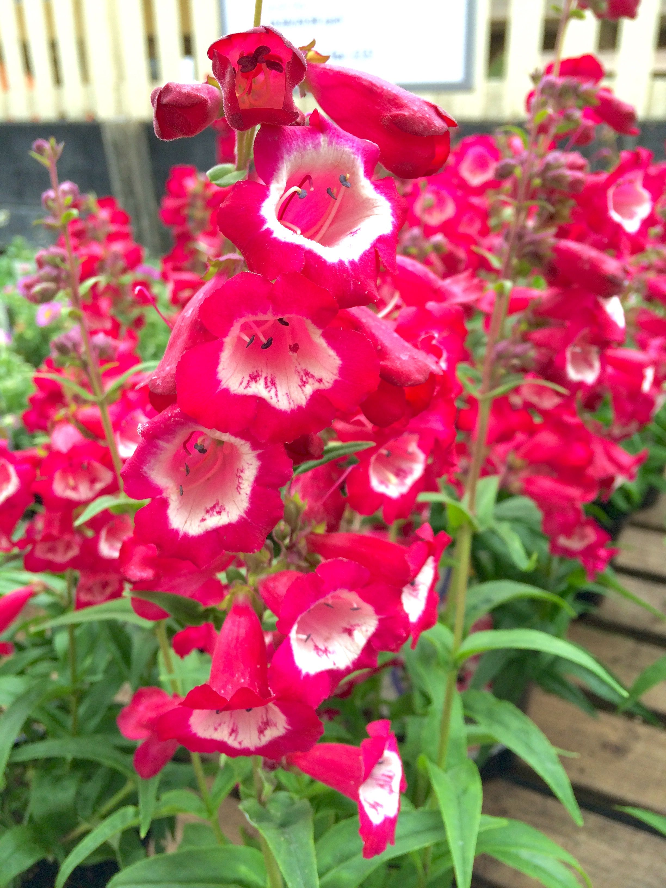

Common Name: Beard Tongue
Botanical Name: Penstemons
Chinese Name: 钓钟柳
|

Penstemons / Beard Tongue |
Penstemons / Beard Tongue |
Penstemons / Beard Tongue |
|
Other references
RHS
Gardenia
Gardeners' World
Penstemons are reliable summer-flowering perennials in all but the coldest regions. With semi-evergreen foliage in winter and a flowering season from summer into autumn, they bring welcome colour to the garden.
These upright, bushy plants, with narrow pointed leaves, produce spires of thimble-like flowers, sometimes flaring at the tip. Colours include white, pink, red, blue and purple; some flowers combining two colours known as bi-colours.
Penstemons grow in most soils that drain freely, flowering prolifically in fertile soils. They need full sun. In cold areas, they appreciate the protection of growing near a sunny, warm wall.
Deadheading plants encourages them to continue flowering. In cold areas, take cuttings in late summer and overwintering these in a cool greenhouse is a good way to safeguard against potential winter losses.